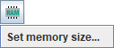

User Interface
1. Main view

Each Tracker tab, like "Untitled" above, displays the following components:
- A main video view that displays video images with track overlays. The video view has a fixed, stable video image. Tracks are marked and edited in the video view.
- A menu bar that offers access to most program commands and settings. Some menu items include icons showing which toolbar buttons perform identical actions.
- A two-tiered toolbar, displayed directly below the menu bar, that offers quick access to frequently used controls, tools, track settings and data fields.
- A player that controls the video playback and video clip settings.
- Additional views in attached view panes. Open, close or resize a view by clicking or dragging the thin dividers between panes or by selecting the desired view from the Window menu. Maximize or restore a view by clicking its Maximize button
 or double-clicking its toolbar.
or double-clicking its toolbar.
2. Toolbar

The order of the buttons on the main toolbar closely match the steps used to analyze a video. They include (from left to right):
- Open button opens a digital video or tracker file in a new tab.
- Save button saves the current tab in a tracker file.
- Open Library Browser button opens the OSP Digital Library Browser for easy access to local and web-based videos, tracker files and ZIP resources.
- Export ZIP Resource button opens a dialog for exporting a Tracker ZIP resource.
- Clip Settings button shows and hides the clip inspector.
- Calibration button shows and hides the calibration stick, calibration points and/or offset origin.
- Axes button shows and hides the coordinate axes.
- Create button creates a new track in the current tab.
- Track Control button shows and hides the track control.
- Zoom button turns on the zoom tool.
- Trails button sets the length of all trails.
- Labels button shows and hides all labels.
- Path button shows and hides all paths.
- Positions button shows and hides all point mass positions.
- Velocities button shows and hides all point mass velocity vectors.
- Accelerations button shows and hides all point mass acceleration vectors.
- Stretch button stretches all vectors.
- Dynamics button multiplies all motion vectors by mass.
- Notes button shows and hides the notes window.
- Documents button displays supplemental HTML and/or PDF documents associated with a Tracker ZIP resource
- Refresh button refreshes track data and views and turns auto-refresh on and off
The lower tier of the toolbar is used mainly for selected track data and input fields, but also contains a memory manager button that manages and monitors Tracker's memory status. See memory management for more information.
3. Additional views
Here a particle model track has been added and the split panes have been opened to display all view types and positions.
- The main video view (pane 0--top left) displays the video and tracks in video space. In this example, the video view keeps the video image (white background) fixed even though the axes are tilted.
- The plot view (pane 1--top right) displays one or more graphs of track-generated data. Multiple graphs are stacked vertically.
- The table view (pane 2--bottom right) displays a data table of track-generated data.
- The world view (pane 3--bottom center) displays the video and tracks in world space. The world view keeps the axes fixed (with the x-axis pointing right), so the video is tilted.
- The page view (pane 4--bottom left) displays text and html pages.
Except for the main video view, any view pane can display any type of view. To select a desired view type, click the view chooser button at the left end of a view toolbar and choose from the drop-down list.

4. Hints
By default, Tracker displays hints in a yellow box at the bottom right corner of the main view. Hints are very useful for new and occasional users of Tracker. Experienced users can turn off hints by unchecking the Show Hints checkbox in the Help menu or in the Display tab of the preferences dialog.

5. Background mat
The background mat is a white area normally hidden behind the video. It is never smaller than the video, but may be made larger if desired by choosing from the Edit|Mat Size menu. A larger mat size increases the area that is drawn in the video and world views. This is useful when some of a track's steps, or the axes, would otherwise be drawn offscreen--a common situation when using particle model tracks, calibration point pairs or offset origins.
6. Languages
Select a language other than that of the default locale by choosing from the Edit|Language menu or in the Display tab of the preferences dialog.
If your preferred language is not available, and you wish to provide a translation, please contact Douglas Brown at dobrown at cabrillo dot edu.
7. Undo and redo
Most operations in Tracker can be undone and redone using the Undo and Redo items in the Edit menu. There is no limit to the number of undo actions.
8. Memory management
By default Tracker has at least 64MB of memory available (machine-dependent), enough to handle most moderate-sized videos. But when analyzing large or multiple videos, or long image sequences, additional memory will likely be needed. The memory manager button on the lower tier of the toolbar displays information about the current memory status. The button text turns red when the current memory limit is approached.
Larger memory sizes are set in the Runtime tab of the preferences dialog. Clicking the memory manager button pops up a menu item that provides easy access to this tab.

9. Tracker Preferences
The preferences dialog enables a user to set the configuration and other properties of Tracker. These preferences are saved in a ".tracker.prefs" file that is automatically read every time Tracker starts. To display the preferences dialog, choose the Edit|Preferences menu item. To relaunch Tracker immediately with changed preferences, click the Relaunch Now button.
Set preferences in the following tabs:
- Configuration tab. The "configuration" refers to the menus, buttons and other user interface features included in Tracker. By unchecking items in the configuration tab, you can hide unwanted features. This is particularly useful when introducing students to Tracker for the first time. As they gain familiarity with the program, additional features can be displayed as needed.
- Check the config.saveWithData item to save customized configurations in the tracker data file (.trk) when a Tracker tab is saved. A configuration saved in a trk file will override the default configuration when the tab is loaded.
- Click the Save As Default button to use a configuration as the default for new tabs and tabs loaded from trk files without a custom configuration.
- Display tab.
- Select a preferred look and feel from the dropdown list or choose default to use the default look and feel (varies with platform).
- Select a preferred language from the dropdown list.
- Check the Show hints by default checkbox to show hints on startup.
- Select degrees or radians for the default angle units.
- Runtime tab.
- Select a preferred Tracker version from the dropdown list or choose default to use the most recently installed version.
- Enter or select a preferred Java Virtual Machine in which to run Tracker or leave blank to use the default Java VM.
- Set a preferred memory size or check the Use default checkbox to accept the default size (varies with platform and available RAM).
- Enter or select one or more optional executable files to be executed prior to starting Tracker.
- Video tab.
- Select a preferred video engine (Xuggle, QuickTime or none). Unavailable engines on your machine are grayed out.
- Select the fast (may be jerky) or smooth (may be slow) playback option for videos opened with Xuggle.
- Check the boxes to display warning dialogs when no video engine is found, non-fatal Xuggle errors occur, or frame durations are not constant.
- General tab.
- Set the preferred number of files displayed in the File|Open Recent menu, or clear the current menu items.
- Set a preferred cache directory for downloaded web files, browse the cache in a file browser, or clear some or all cache files.
- Set the startup level for the Message Log. Set the level to ALL for detailed trouble-shooting.
- Select a preferred interval to automatically check for upgrades or click the Check Now button to check immediately.